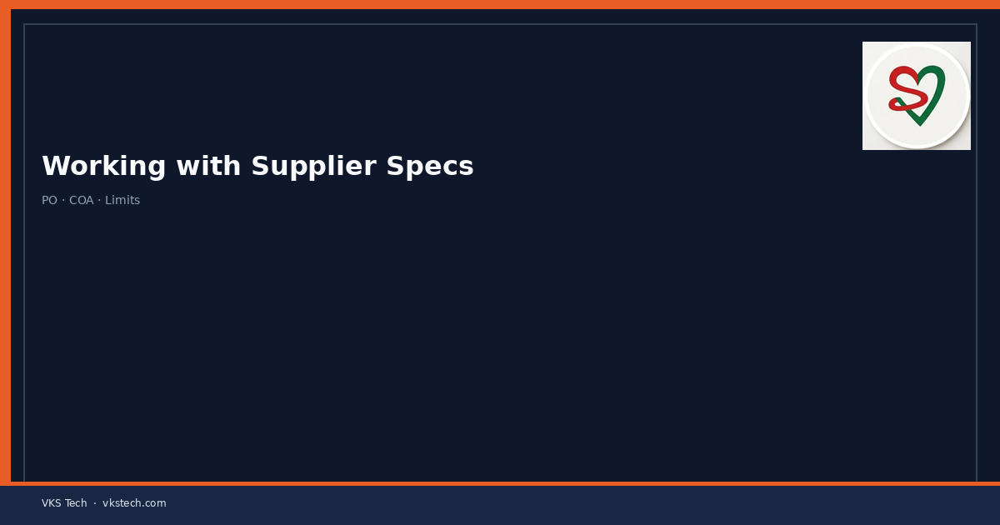
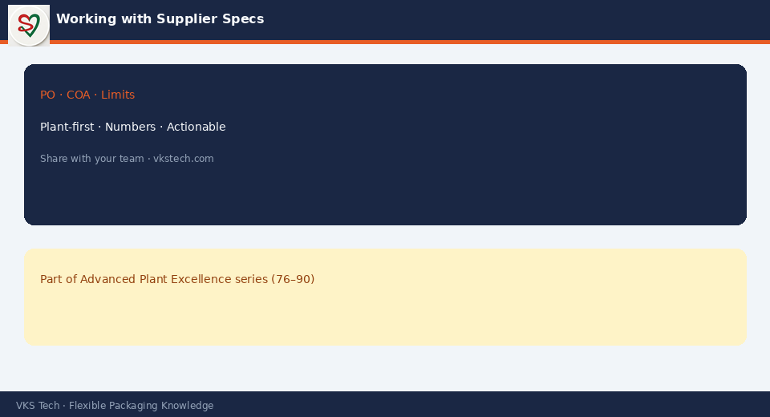

📋 Clear, Agreed Specs with Film, Ink and Adhesive Suppliers Reduce Incoming Variation and the Arguments That Follow When Something Fails
📖 11-min read · Supplier Management · Quality + PPC + Procurement
When a structure fails bond, colour drifts, or film behaves differently on the machine, the first reaction is often “the supplier sent bad material”. Sometimes that is true. Often the root is that the specification was vague, incomplete, or never properly agreed and controlled. Clear specs, agreed measurement methods and a simple incoming check system prevent most of these fights and most of the waste that follows.
- Write critical parameters with numbers and tolerance, not “good quality”
- Agree the test method and sampling plan with the supplier
- Do a basic incoming check on every critical lot
- Keep certificates of analysis and link them to the lot used on the machine
- When something fails, compare measured values to the agreed spec before arguing

1. What a Useful Spec Contains
| Element | Example |
|---|---|
| Critical property + unit | Bond strength (N/15mm), COF, thickness (µm), viscosity (s) |
| Target and tolerance | Bond ≥ 2.5 N/15mm; thickness 20 ± 1 µm |
| Test method | ASTM / ISO / internal method number |
| Sampling | How many samples per lot, from where |
| What happens on fail | Reject, concession process, notification |
2. Practical Working Method
- Agree the written spec — Both sides sign or formally accept the document. Verbal “we know what you need” is not a spec.
- Incoming control — For critical materials, check the key parameters (or at least the CoA against the spec) before the material is released to production.
- Traceability — Link the lot number used on each job to the CoA / incoming check. When a complaint comes, you can go back to the exact material.
- Feedback loop — When material is out of spec or causes process issues, feed the data back to the supplier with numbers, not just “it was bad”.
- Periodic review — Specs should be reviewed when structures, processes or suppliers change.
3. Common Weak Points
- Spec exists only in an old email or in someone’s head
- No agreed test method → different labs give different numbers
- No incoming check → out-of-spec material reaches the machine
- No lot linkage → impossible to investigate cleanly later
Treat supplier specs as process control documents, not as paperwork for the purchasing file.
📋 फिल्म, इंक और एडहेसिव सप्लायर के साथ स्पष्ट, सहमत स्पेक्स आने वाली विविधता और विफलता के बाद के विवादों को कम करते हैं
📖 11-मिनट पढ़ें · सप्लायर मैनेजमेंट · क्वालिटी + PPC + प्रोक्योरमेंट
जब स्ट्रक्चर बॉन्ड फेल करता है, रंग ड्रिफ्ट करता है या फिल्म मशीन पर अलग व्यवहार करती है, पहली प्रतिक्रिया अक्सर “सप्लायर ने खराब मटेरियल भेजा” होती है। कभी-कभी यह सच होता है। अक्सर जड़ यह होती है कि स्पेसिफिकेशन अस्पष्ट, अधूरी या कभी ठीक से सहमत और नियंत्रित नहीं थी।
- क्रिटिकल पैरामीटर नंबर और टॉलरेंस के साथ लिखें, “अच्छी क्वालिटी” नहीं
- टेस्ट मेथड और सैंपलिंग प्लान सप्लायर से सहमत करें
- हर क्रिटिकल लॉट पर बेसिक इनकमिंग चेक करें
- CoA रखें और मशीन पर इस्तेमाल लॉट से लिंक करें